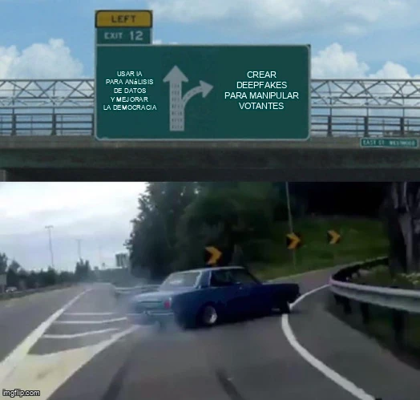

estrategIA #15 ·
Dos salidas para la IA electoral
El contexto
El coche que se desvía bruscamente representa la elección de un uso manipulador de la IA frente al análisis de datos para mejorar la democracia. Los deepfakes son contenidos audiovisuales sintéticos capaces de simular personas o situaciones.
Publicado en: estrategIA #15 Entre la personalización y la manipulación: El Impacto de la IA en las próximas elecciones estadounidenses
Leer el texto de la imagen
LEFT EXIT 12 USAR IA PARA ANÁLISIS DE DATOS Y MEJORAR LA DEMOCRACIA CREAR DEEPFAKES PARA MANIPULAR VOTANTES
Marca de la herramienta visible en el original: imgflip.com.